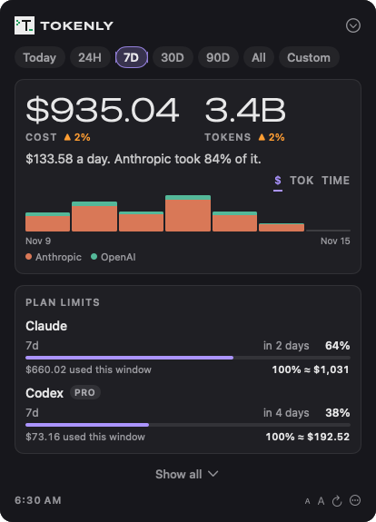
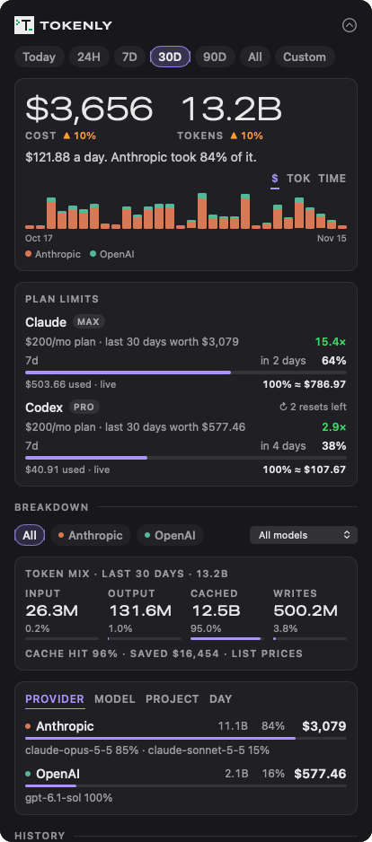
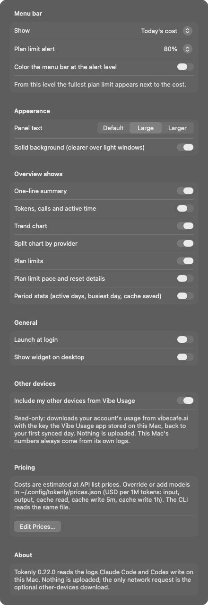

A tiny macOS menu bar app for Claude Code and Codex. Cost at API prices, plan limits and where your tokens go, read straight from the logs on your Mac.
Free and open source · macOS 13+ · Apple silicon & Intel · ~1 MB

The panel opens on a short overview. Unfold it when you want the breakdown and the history.
Spend at API list prices next to token volume, with the change from the previous period and a one-line summary.
Claude and Codex 5h / 7d limits, time to reset, a warning when you're on pace to run out, and what 100% of a limit is worth.
Split by provider, model, project and device. Charts stack by provider; the token mix shows what the cache saved you.
Today, 24 hours, 7 / 30 / 90 days, all time or a custom range. Hourly, daily or monthly bars, and a 13-week calendar.
Optionally bring in your other devices from a linked Vibe Usage account, read-only, back to your first day.
Pick what the menu bar shows, which sections appear, text size, and your own prices for any model.

Tokenly reads the session logs Claude Code and Codex already write to your Mac. It never sends your usage anywhere and needs no account.

The same numbers in your terminal: Python, no dependencies.
$ tokenly 7 --by provider input output cache_read cache_write total cost($) Anthropic 2,140 812,300 96,420,000 4,118,000 101,352,440 61.40 OpenAI 390,200 98,750 18,240,000 0 18,728,950 3.92 $ tokenly --quota Plan limits (as last recorded locally) Claude 7d 64% resets Nov 17 11:00 Codex (Pro) 7d 38% resets Nov 19 18:31
Install with pipx install git+https://github.com/Longado/tokenly